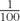
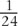
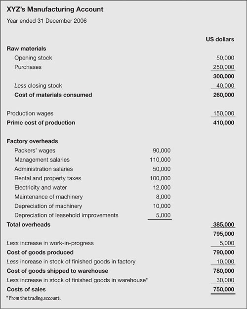

Cost of sales
What counts as cost of sales?
Cost of sales, sometimes perplexingly referred to as cost of goods sold, includes all the spending directly associated with the sales. A few examples should make this clear:
For wholesalers, retailers and other resellers, costs of sales is essentially the price paid to acquire the goods or services that will be resold.
For a software company, the cost of sales might be identified as  of the cost of research and development directly associated with developing the product (if lifetime sales are expected to be 100 copies). Or cost of sales might be booked each month as  of the cost of development, if the product is estimated to have a life of two years.
In other manufacturing situations, the cost of sales is all spending directly attributed to production – raw materials, components, wages, factory overheads and so on.
The key word is directly. You could not run your business without your accountants (could you?), but although they create an operating expense, they are not a direct cost of sales. Only if you can directly match all or part of one item of sales to one unit of something can you class it as part of the cost of sales. Other outlays are known as, you guessed, indirect costs. To summarize:
Direct costs are those outlays directly associated with a unit of a product – raw materials, components, factory overheads and so on.
Indirect costs include all other spending which cannot be directly attributed to sales and production.
As an example of a more complex cost-of-sales calculation, figures for a manufacturing concern are shown in Fig. 13.2. Note that the breakdown shows depreciation of machinery and not the acquisition cost of machinery, as explained and calculated in the previous chapter. The same applies to all capital spending.
Fig 13.2. Cost of sales

Sales commissions can be treated as cost of sales if their level directly relates to sales. Otherwise, they are an operating overhead.
‘Corporation: an ingenious device for obtaining individual profit without individual responsibility.’
—Ambrose Bierce
Product costs
It hardly needs to be said that you need to know the cost of one unit of your product. Apart from anything else, you will use this figure in your forecasts (see below). In keeping with true beanie tradition, this figure is not quite as obvious as you might expect. I will describe the calculations for a manufacturing business, because this involves all the elements you might encounter. The same logic applies if you are providing services, or reselling someone else’s products, or making something that does not involve noisy machines (e.g. software development). For these other situations, the arithmetic is similar, but less complex.
For any one period, such as a year, the cost of producing one gizmo is derived by dividing total costs by the number of items. For example, if the $750,000 of activity in Fig. 13.2 produced 375,000 widgets, the costs associated with producing one widget are:
| Unit cost | = total cost of production ÷ volume of production |
| = $750,000 ÷ 375,000 | |
| = $2. |
Incidentally, this is the direct cost of one unit. It does not tell you how to set your sales price, because production (and purchase) costs do not include operating overheads – and clearly you have to cover these in order to stay in business.
|
How fixed is fixed?
The calculation above gives you a useful measure for one time period. You can take the analysis a little further by breaking spending into fixed and variable costs.
Variable costs (such as raw materials or wholesale purchases) vary directly with sales volume.
Fixed costs are relatively fixed in relation to production and sales. Factory rent will not vary, whether output is zero or running at maximum capacity. Machine costs might be fixed in relation to smaller quantities of output. If you lease machines which produce up to 100,000 units a month, your fixed costs related to the machines increase every time that production passes a 100,000 barrier.
Take a simple example. A gizmo manufacturer rents a factory, leases a machine, and employs a couple of people – all for $100,000 a year. These are the fixed costs of production. The variable costs, relating to materials and components, amount to a convenient $1 per gizmo.
If the plant produces one gizmo, the cost of that item, and the total costs of production, are both $100,001.
If production is 10,000 units, total costs rise to $110,000, but the average cost of each gizmo falls to $11,000.
If production increases to 1 million items, total costs jump to $1,100,000, but average costs plummet to $1.10 per unit.
Clearly the average cost of one item depends crucially on how many are pumped out in any one period. Of course, real life is rarely as simple as this example. The machinery might be capable of producing a million gizmos each year, but what about the supporting cast? As output increases, the factory will probably need extra production or quality control staff, or more handling and storage space. If production exceeds one million, perhaps an additional machine will be required.
|
| Fixed costs are only fixed over certain ranges of output. At various production levels, fixed costs ratchet up a notch. |
Production schedules
You can build a very interesting spreadsheet costing the resources required to produce at various levels of output. For example, for every increase of 100,000 units you might require one operative on the production line, each 300,000 extra units might require an extra packer, and so on. You can plug these figures, and the other costs, into a spreadsheet such as the simplified example in Fig. 13.3. This illustrates the cumulative cost at several levels of output. For example, for 300,000 units of production, total costs are $525,000 and the average cost per unit is $1.75. In other words, if sales are 300,000 units, you have to sell at a minimum price of $1.75 in order to cover product costs (but not overheads).
| Units, millions | Costs, dollars | |||||
|---|---|---|---|---|---|---|
| Production | Packing | Other fixed | Variable | Total | Average | |
| 0.1 | 20,000 | 15,000 | 150,000 | 100,000 | 285,000 | 2.85 |
| 0.2 | 40,000 | 15,000 | 150,000 | 200,000 | 405,000 | 2.03 |
| 0.3 | 60,000 | 15,000 | 150,000 | 300,000 | 525,000 | 1.75 |
| 0.4 | 80,000 | 30,000 | 150,000 | 400,000 | 660,000 | 1.65 |
| 0.5 | 100,000 | 30,000 | 150,000 | 500,000 | 780,000 | 1.56 |
| 0.6 | 120,000 | 30,000 | 150,000 | 600,000 | 900,000 | 1.50 |
| 0.7 | 140,000 | 45,000 | 150,000 | 700,000 | 1,035,000 | 1.48 |
| 0.8 | 160,000 | 45,000 | 150,000 | 800,000 | 1,155,000 | 1.44 |
| 0.9 | 180,000 | 45,000 | 150,000 | 900,000 | 1,275,000 | 1.42 |
| 1.0 | 200,000 | 60,000 | 150,000 | 1,000,000 | 1,410,000 | 1.41 |
If you repeat this exercise including all other operating and overhead costs, you will see instantly the break-even selling price for any sales volume. But we are getting ahead of ourselves. More on this in Chapter 23.
‘Profit in business comes from repeat customers that boast about your project or service, and that bring friends with them.’
—W. Edwards Deming
Unambiguous inventory
|
| Inventory is your stockpile of unsold raw materials, work-in-progress, finished goods and services that you intend to sell. You could, for example, have an inventory of computer software if this was your business. This is trading inventory. It is not what you have in your stationery cupboard (unless you are in the office supplies business) and it is not your stock of fixed assets (such as machinery and equipment). |